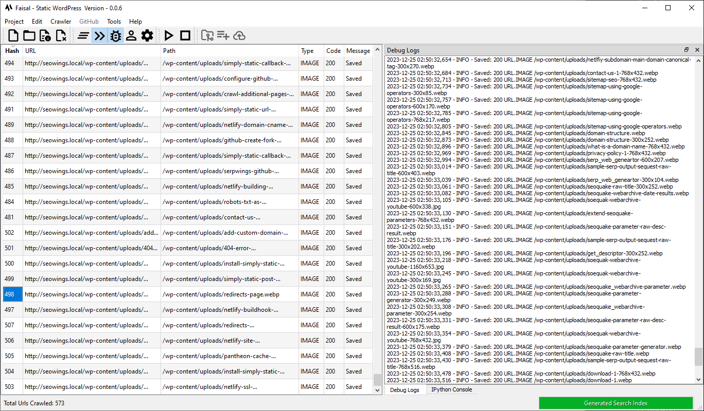

static-wordpress¶
Python Package for Converting WordPress Installation to a Static Website.


Desktop Version¶

How to Install static-wordpress?¶
Windows Installer¶
We provide an exe file of staticwordpress for the convenice of users. Please download the latest version from release section.
Source Code¶
- Clone or download this repository to your computer.
- Create a virtual environment using
python -m .venv venv - Navigate to the downloaded directory and then install all required dependencies using
pip install -e . - Once all dependencies are met, then start staticwordpress by typing
staticwordpresson commandline.
Development¶
This package is available at pypi and you can install it with pip install staticwordpress command. It will also install required additional libraries/Python Packages automatically.
Once installed, you can implement customized workflows. Here is an example of post processing simply-static-zip file.
import logging
from staticwordpress.core.workflow import Workflow
from staticwordpress.core.constants import SOURCE, HOST
# enable logging for all functions.
logging.basicConfig(
format="%(asctime)s - %(levelname)s - %(message)s",
level=logging.DEBUG,
stream=sys.stdout,
)
swp = Workflow()
swp.create_project(
project_name_="simply-static-zip-deploy",
wp_user_=env_wp_user, # your wordpress username
wp_api_token_=env_wp_api_token, # wordpress xml api token
src_url_=env_src_url, # source url where WordPress is hosted
dst_url_=env_dst_url, # destination url where you want to host Static version
output_folder_=env_output, # Output folder location, where processed files will be saved
src_type_=SOURCE.ZIP, # Data Source e.g. ZIP file from Simply Static WordPress Plugin
host_type_=HOST.NETLIFY, # Host, where you want to deplyo your website.
)
swp.download_zip_file()
swp.setup_zip_folders()
swp.add_404_page()
swp.add_robots_txt()
swp.add_redirects()
swp.add_search()
Documentation¶
Detailed documentation of all features is available at staticwordpress documentation.
Contribute¶
Pull Requests, Feature Suggestions, and collaborations are welcome.
ICONS¶
Icons used in this project are obtained from Google Fonts Material Symbols
About Us¶
This work is a collaborative effort of seowings, and serpwings.